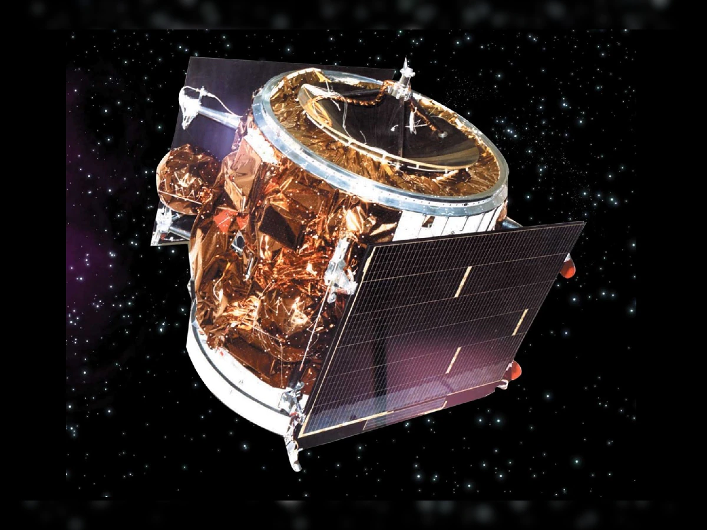

The Ariane Passenger PayLoad Experiment, was an experimental communication satellite with a C-Band transponder launched by the Indian Space Research Organisation on June 19, 1981, by Ariane, a launch vehicle of the European Space Agency from Centre Spatial Guyanais near Kourou in French Guiana.